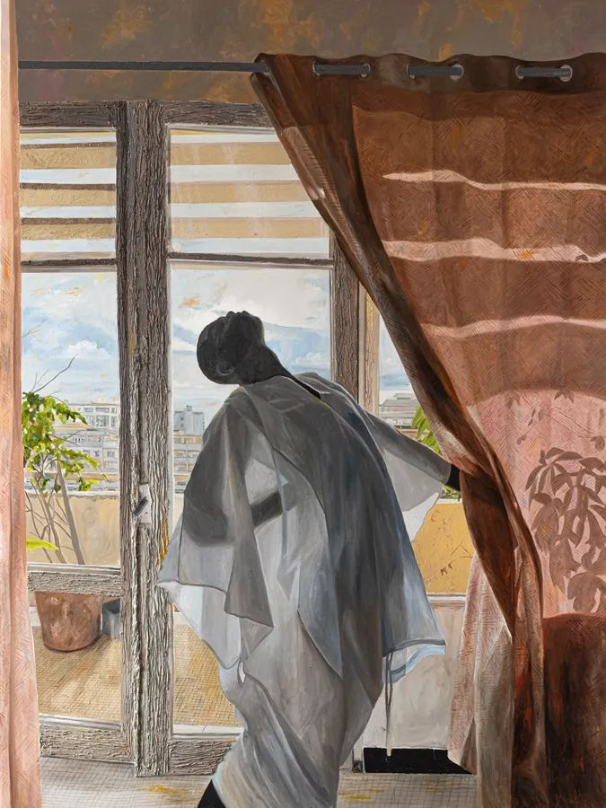

D’une œuvre à l’autre, Elladj Lincy Deloumeaux nous plonge dans un récit pictural où s’entremêlent à l’envie les anecdotes d’une histoire personnelle et les chroniques d’un monde pluriel. Il nous fait pénétrer dans son univers fait de souvenirs d’enfance, d’adolescence et d’histoires familiales, à la frontière du réel et du rêvé.
Au cœur de la recherche plastique de l’artiste se trouve la volonté de se connecter à une ancestralité matricielle, liée à des rites passés et secrets parfois, sans cesse réactualisée par une quête de sens contemporaine.
Elladj Lincy Deloumeaux explore notamment les multiples facettes de la couleur noire qui pour lui porte un poids symbolique. Au-delà d’une couleur de peau, il symbolise dans différentes spiritualités afro-caribéenne et indienne une couleur divine, le symbole du baiser du soleil, le noir charbon. Couleur primordiale et cosmique, lieu de la création et de la destruction, le noir est la composante essentielle des dessins de l’artiste, dont le format rappelle des photographies d’identité.
L’artiste travaille cette couleur par superposition de textures plus épaisses et plus fines, laissant place à des aspérités qui font écho à la complexité et la pluralité de l’identité des personnes représentées. En quête d’une vérité et non d’une perfection il laisse volontairement la trace de son processus artistique, la peinture en train de se faire, comme l’indice que toujours tout est et que tout advient.
Expositions à la galerie